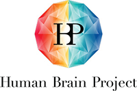

People¶
This work is made available by a community of people, which originated from the INRIA Parietal Project Team and the scikit-learn but grew much further.
An up-to-date list of contributors can be seen in on GitHub
Additional credit goes to Michael Hanke and Yaroslav Halchenko for data and packaging.
Core developers¶
The nilearn core developers are:
Triage team¶
The triage team is responsible for helping to review and prioritize issues related to Nilearn development, as described in the Nilearn maintenance process. We are actively looking for more contributors to join the team. You can indicate your interest by contacting one of the Nilearn Core developers.
Other contributors¶
Some other past or present contributors are:
Funding¶
Alexandre Abraham, Gael Varoquaux, Kamalakar Reddy Daddy, Loic Estève, Mehdi Rahim, Philippe Gervais were paid by the NiConnect project, funded by the French Investissement d’Avenir.
Kshitij Chawla was paid by INRIA.
Nicolas Gensollen is paid by the Human Brain Project .
{kind=link}
{kind=link}
Citing nilearn¶
There is no paper published yet about nilearn. We are waiting for the package to mature a bit. However, the patterns underlying the package have been described in: Machine learning for neuroimaging with scikit-learn.
We suggest that you read and cite the paper. Thank you.
Citing scikit-learn¶
A huge amount of work goes into scikit-learn, upon which nilearn relies heavily. Researchers who invest their time in developing and maintaining the package deserve recognition with citations. In addition, the Parietal team needs citations to the paper in order to justify paying a software engineer on the project. To guarantee the future of the toolkit, if you use it, please cite it.
See the scikit-learn documentation on how to cite.